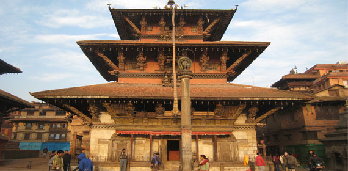
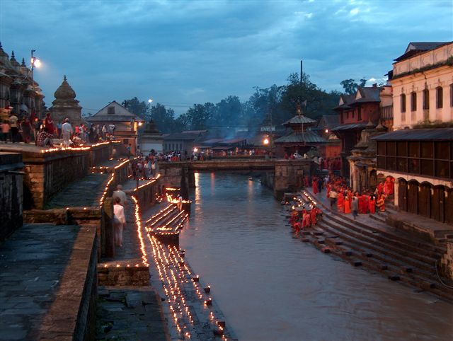
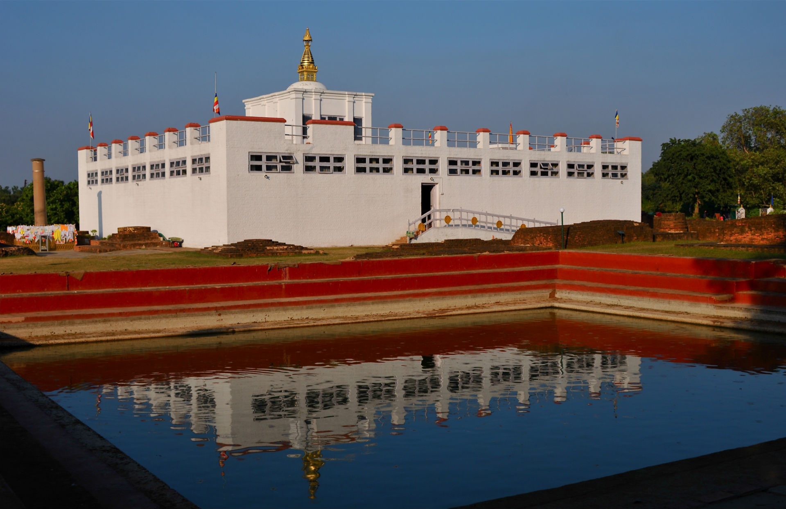

Welcome Nepal





Himalayas

Containing nine of the world's fourteen highest mountain peaks, Nepal is a true Himalayan kingdom. The Himalayas cover three fourths of the land in Nepal. It is home to some of the highest, remotest, and most rugged and most difficult terrain in the world. The loftiest peak in the world Mount Everest and other high peaks like Lhotse, Nuptse, Annapurna, Dhaulagiri and Manaslu, plus the presence of some exquisitely beautiful trekking routes, attract hundreds of thousands of people from all over the world to this lovely Himalayan destination. Sunset at Nuptse. The country of Nepal can be divided into three parallel bands running from the northeast towards the southwest. Along the north of Nepal runs the Great Himalayan Range, the highest mountain range in the Himalayan system.
Lumbini

Lumbini is a Buddhist pilgrimage site in the Rupandehi district of Nepal.[1],. It is the place where Queen Mayadevi gave birth to Siddhartha Gautama, who as the Buddha Gautama founded the Buddhist tradition. The Buddha lived between roughly 563 and 483 BCE. Lumbini is one of four magnets for pilgrimage that sprang up in places pivotal to the life of the Buddha, the others being at Kushinagar, Bodh Gaya and Sarnath.Lumbini was where the Buddha lived until the age of 29. Lumbini has a number of temples, including the Mayadevi temple and others under construction. Also located here is the Puskarini or Holy Pond where the Buddha's mother took the ritual dip prior to his birth and where he, too, had his first bath, as well as the remains of Kapilvastu palace.
Kathmandu Valley

The Kathmandu Valley, located in Nepal, lies at the crossroads of ancient civilizations of Asia, and has at least 130 important monuments, including several places of pilgrimage for the Hindus and the Buddhists. There are seven UNESCO World Heritage Sites within this valley. Historically, only the Kathmandu Valley was referred to as "Nepal" by people who lived outside the valley. After the annexation of the valley by the Gorkha kingdom, and subsequent conversion of the valley as the capital of their empire, this designation of "Nepal" was extended to every land they conquered. The valley itself was referred to as "Nepal Proper" by British historians.The Kathmandu Valley may have been inhabited as early as 300 BCE.